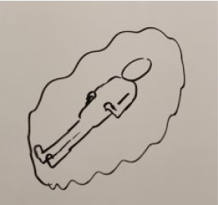

Hi, i’m Alisher
I’m a UX, UI designer
I want to help businesses design, design for a better user experience, IA, user flow, wireframing (lo-fi and hi-fi) and prototyping. This passion helps me solve business problems
Fo_oD.Style
UX/UI
This is an individual project created to gain experience in mobile design development. Applications Fo_oD Style aims to combine delivery.

Canto
UX/UI
This is an individual project created to gain experience in mobile design development. Applications Fo_oD Style aims to combine delivery.